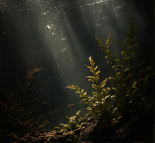

UX Case Study
PELAGEA
Designing an Immersive Underwater Luxury Experience
Language
Project Overview
PELAGEA explores how scrolling can become part of storytelling instead of simply revealing content.
The website presents a fictional luxury aquatic brand specializing in rare fish and custom aquariums. Rather than separating content into disconnected sections, the interface simulates a gradual descent beneath the ocean surface.
The objective was to combine editorial storytelling, premium branding, and immersive navigation into one continuous experience.
UX Problem
How can scrolling become an emotional journey without reducing usability?
Luxury brands often rely on large product grids and repetitive layouts that prioritize browsing speed over emotional engagement.
For a premium aquatic collection, the challenge was to communicate rarity, calmness, and exclusivity while keeping the shopping experience familiar and easy to understand.
UX Goals
- Transform scrolling into underwater exploration.
- Build atmosphere before presenting products.
- Keep navigation minimal and distraction-free.
- Guide users naturally from discovery to collection.
- Reinforce luxury through pacing and hierarchy.
- Balance storytelling with practical browsing.
User Journey
A Gradual Dive Beneath the Surface
The experience encourages gradual exploration instead of immediate product comparison.
- Landing
- Enter the underwater world
- Discover the brand philosophy
- Explore featured collections
- Browse individual species
- Learn brand values
- Continue to collection pages
Navigation Concept
Navigation remains intentionally minimal.
The primary navigation stays fixed while the scroll itself becomes the main storytelling tool.
The interface never overwhelms visitors with options, allowing the visual experience to remain the focus.
Scroll Experience
The scrolling structure follows the metaphor of an underwater dive.
As the visitor scrolls, the environment becomes calmer and more intimate.
Information is revealed progressively, creating a sense of depth without requiring complex interactions.
Information Hierarchy
Each section introduces only the information necessary for the next step.
- Hero Scene
- Brand Introduction
- Featured Services
- Collection Preview
- Species Cards
- Brand Benefits
- Footer
Collection UX
Browsing as an Editorial Exhibition
Featured species are presented as large editorial cards instead of compact product thumbnails.
Each card combines photography, typography, and generous spacing to create the feeling of browsing an art collection rather than an online catalog.
Large imagery allows every species to become the visual focus while preserving the premium identity of the brand.

Visual UX Reasoning
The interface relies on darkness rather than brightness. Deep black backgrounds simulate underwater depth while warm highlights emphasize the fish.
Dark backgrounds create depth.
Large photography creates emotional connection.
Minimal navigation reduces distraction.
Bronze accents reinforce luxury.
Editorial spacing slows browsing.
High contrast improves readability.
Microinteractions
Animations remain restrained to preserve the calm atmosphere expected from a luxury brand.
- Smooth scrolling.
- Subtle image hover animations.
- Gentle button transitions.
- Soft fade-ins.
- Minimal movement throughout the page.
- Refined collection card interactions.
Accessibility Considerations
The underwater atmosphere should enhance immersion without reducing clarity.
- Readable typography.
- High contrast text.
- Clear navigation.
- Large interactive areas.
- Visible hover states.
- Responsive layouts.
- Keyboard-accessible navigation.
- Reduced motion compatibility.
Key Design Decisions
Every Detail Supports the Dive
Scrolling represents descending into the ocean rather than simply moving down a webpage.
Photography becomes the primary storytelling element instead of decorative imagery.
Collections are presented as editorial showcases rather than traditional product grids.
Minimal navigation keeps attention on the visual narrative.
Dark color palettes strengthen the perception of depth and exclusivity.
Every section reveals information progressively to support curiosity and reduce cognitive load.
Result
An Immersive Underwater Journey
PELAGEA transforms a traditional luxury e-commerce layout into an immersive underwater journey.
Instead of presenting products immediately, the interface first builds atmosphere, introduces the brand philosophy, and gradually guides visitors toward the collection.
Reflection
Scrolling Becomes Part of the Narrative
PELAGEA demonstrates how a familiar interaction such as scrolling can become part of the narrative itself.
The project explores the intersection of luxury branding, environmental storytelling, and modern UX design while maintaining a clean and accessible browsing experience.